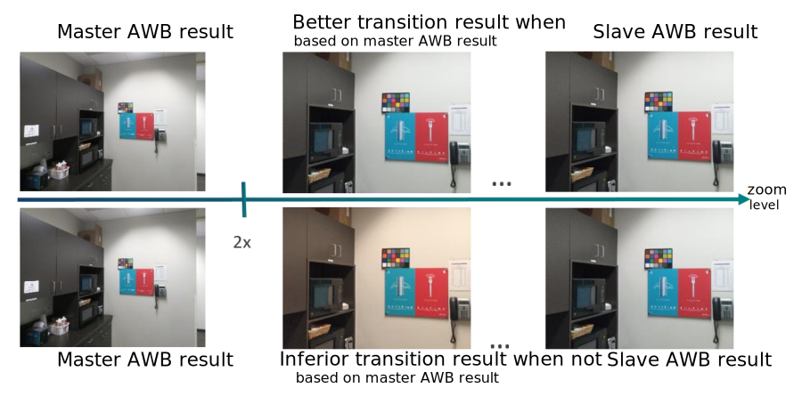
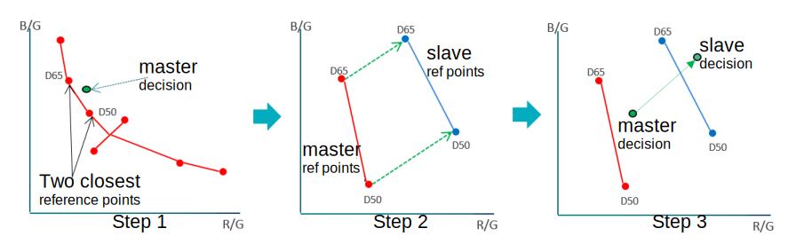
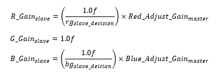
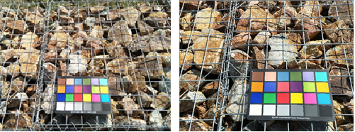
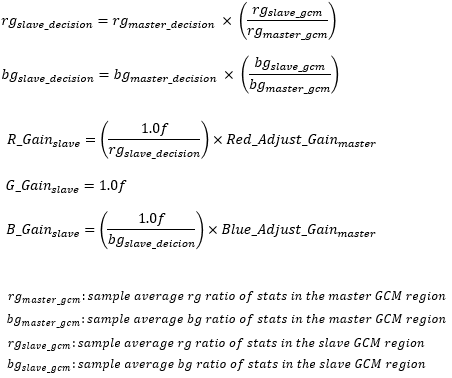
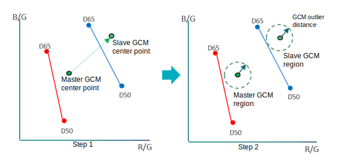
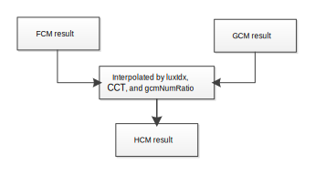

In a dual cam device there are two cameras, a master camera and a slave camera. For the preview mode, when the zoom ratio reaches a certain predefined value, e.g., 2X zoom ratio, the camera process on the master camera turns off and the camera process on the slave camera turns on
When the slave camera turns on, it takes some time to obtain precise AWB gains. Therefore, in the first several frames, the dual camera sync process estimates the AWB gains of the slave camera based on the AWB gains of the master camer. Then the camera process can seamlessly transit from the master camera to the slave camera without artifacts.

To estimate the first frame AWB gains and CCT of the slave camera when the camera process transits from the master camera, dual camera sync supports the hybrid sync mode for wide + tele cameras.
Fixed color matching (FCM)
FCM utilizes the geometrical linearity between the master camera and the slave camera on the R/G-B/G color space. FCM assumes that the AWB decision point can be represented by a geometrical relationship with respect to reference points.

- Given a master decision point of the master camera, find the two closest reference points to the master decision point
- Compute a transformation by using the two closest reference points of the master camera and corresponding reference points of the slave camera
- Transform the master decision point of the master camera with the computed transformation

The initial AWB gains of the slave camera by FCM can be computed by following equations:


Gray Color Matching (GCM)
GCM processing uses the GCM R/G, B/G ratio from the master camera and the slave camera. GCM assumes that both the master camera and the slave camera have similar stat distributions around the GCM center point, i.e., the weighted sample average. The initial AWB gains of the slave camera by GCM can be computed by following equations:

- Transform the GCM center point of the master camera with the estimated transformation
- Collect stats in the GCM region, defined by the GCM outlier
distance parameter. The GCM outlier distance is defined by the master camera
and delivered to the slave camera.
 - From GCM region, compute each of three values of both the master camera and
the slave camera as follows:

GCM only considers gray stats in the GCM region as shown in the following images.
Hybrid color matching (HCM)
- If the spectral response of the two cameras are similar, FCM is the best option to map physically with less computational power. On the other hand, if the spectral response of the two cameras are very different, an incorrect transform can result. A certain light condition can have different characteristics from reference points because only a small number of reference points are used to transform the master decision point and the master GCM center point to the slave decision point and slave GCM center point.
- For many scenes, GCM is more likely to produce a better result than FCM, but if there are not enough stats in the GCM region, the result can be unreliable.
HCM operates by interpolating the FCM and GCM outputs. The interpolation ratio is determined by luxIdx, CCT and gcmNumRatio.
